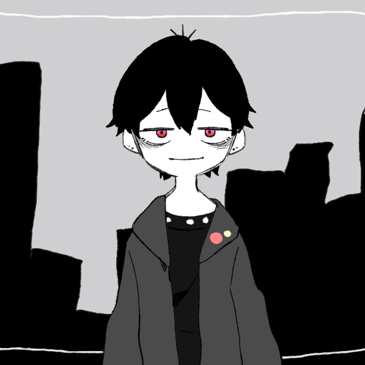

I am Justin Phang Sheng Xuan (20066502),
a student who is in the third semester of the first year in the Computer Science course in Sunway University.
I am a student who is interested in the study of the endangered species of elephants,
thus I made this webside to help spread awareness and teach others about the elephants.
I hope to help people to know more about the elephants and to help them to find a way to protect them.
If you wish to contact me, please do not hesitate to email 20066502@imail.sunway.edu.my!